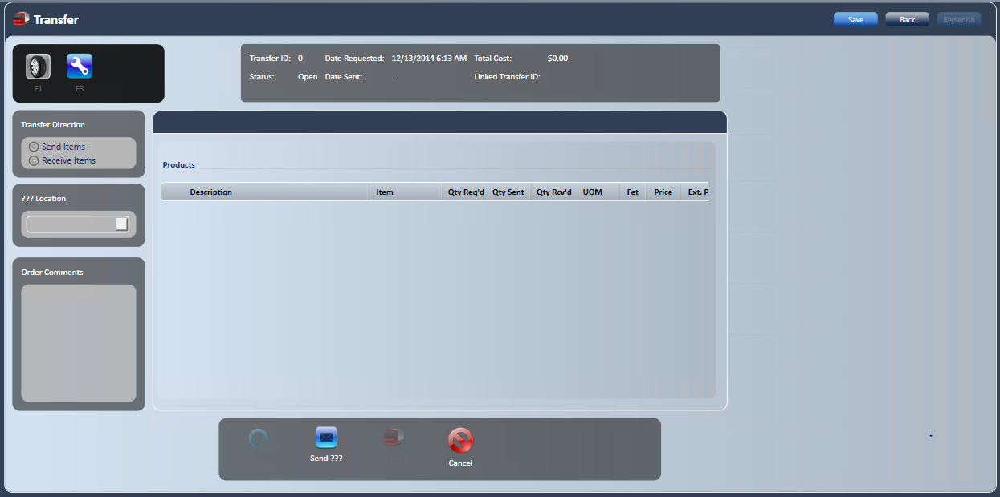
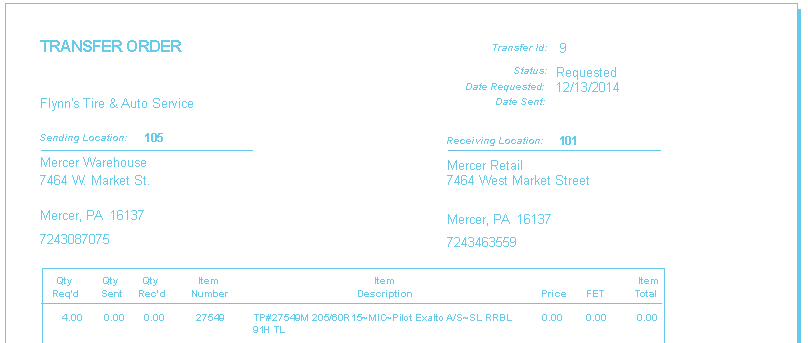
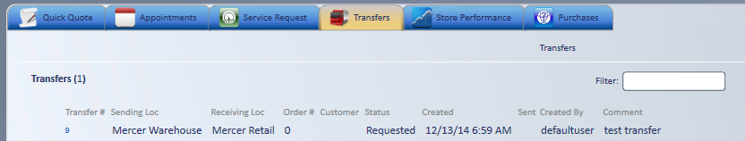
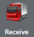

Transfers
Use a transfer to move product between locations. You can also create a transfer from within a service request. To start, go to New; Transfer.

Create a transfer request
- Select the Transfer Direction.
- Select Send items if you will be sending product.
- Select Receive items if you will be receiving product.
- Search for product. Press F1 for tires or F3 for all other inventoried product.
- The search results show the WHSE quantity and ASL quantity.
- WHSE Quantity: quantity in the distribution warehouse.
- ASL Quantity: quantity in all locations, including warehouse locations.
- You can set which locations can be viewed, by location. A checkbox lets you view all locations when checked.
- The search results show the WHSE quantity and ASL quantity.
- Choose the product you want, and then select .
- Enter the quantity you want, and verify that all other needed information is filled in.
- Requesting more than the sending location has available needs the Transfer - Transfer Request access right.
- Close the search screen.
- Select the sending location from the dropdown.
- Enter Comments if needed.
- Select Save.
- The transfer ID and header information display.
- Select Send Request .
- In the confirmation dialog box, select Yes to continue, or No to go back to the transfer.

-
- The printable transfer order displays.
- Select to return to the Home screen.
After you send a request
The transfer request displays on the requesting store's Transfers tab.
- Retail sending location: the request also displays on the sending store's Transfers tab.
- Wholesale sending location: the request automatically fills in a sales order at the Wholesale location.
- While a Wholesale user has the transfer open, Retail shows "The linked transfer is currently locked. You cannot access this transfer." Try again later.
- The transfer shows In Transit on the Retail side until your store receives it.
- Your store can cancel a request sent to a Wholesale warehouse by selecting Cancel on the transfer. This needs the Cancel Transfer Request access right.
Send a transfer

- When the sending location is a Retail store, the sending store opens the transfer from the Transfers tab on the Home screen.
- Verify or fill in the sent quantity.
- Sending more than was requested needs the Transfer - Increase Sending Quantity access right. Without it, you see "You do not have the access rights to send more than requested" and the quantity is set back to the requested amount.
- Transfer cost fills in automatically, priced as set by the Transfer Pricing Source setting (receiving location by default).
- Select Send Transfer .
- In the confirmation dialog box, select Yes to continue, or No to go back to the transfer.
- The transfer saves automatically, and the Transfer Order displays for printing.
- The transfer now shows a status of In Transit on the sending store's Transfers tab. The product is allocated in the sending store's inventory. Inventory is not relieved until the receiving location has received the product.
- The transfer order shows the Linked Transfer ID, which is the transfer ID of the requesting location.
- Deliver a copy of the transfer order with the product.
Note: You can change Order Comments at any point in the transfer. Select Save under Order Comments to keep the change.
Receive a transfer
The Transfers tab at the receiving location lights up red when a transfer needs action.
- Double-click the transfer.
- Linked Transfer ID shows the transfer ID of the sending location.
- Verify that the quantity is correct.
- If it is not, enter the correct received amount.
- Select Receive Transfer.

-
- A dialog box confirms the transfer has been received.
- Select to return to the Home screen.
- The transfer disappears from the Home screen Transfers tab because it is complete.
Note: Inventory is relieved at the sending location and increases at the receiving location when you receive the transfer. A transfer can be received only once.
Note: If less is received than was sent, an email goes to the address in the System Setting Transfer Recipient Email, when your store has one set.
Important: Always receive inventory before you add it to a sales order, so the average cost is accurate.
Tip: Create the transfer from within the service request, so you don't have to leave the service request. The service request ID displays in the comments of the sending location's paperwork, which makes receiving easier. The correct cost is assigned as long as the product is received before invoicing. See Sourcing Manager.